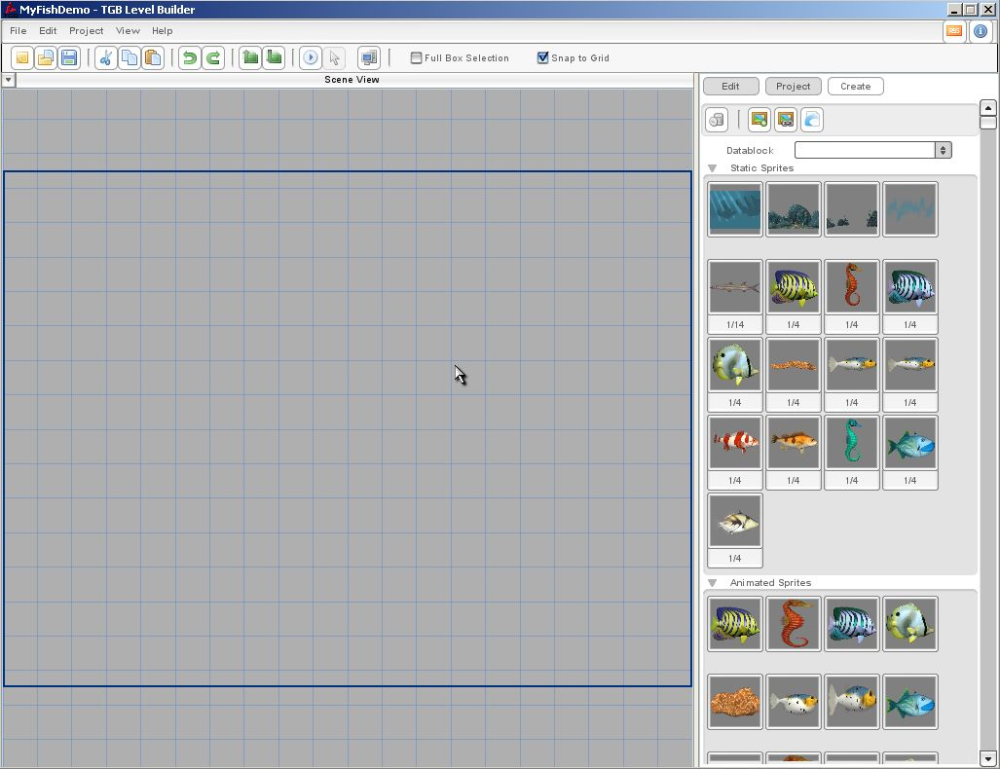

Torque 2D - Fish Demo Tutorial - Part 1
1. Starting Out
Create our project
Our first step is to create a new
project in Torque 2D called "MyFishDemo".

Now that we have our project set up, we
can save out our current empty level. Doing this now will allow us to simply
click the save icon later to easily save our progress. So, click the "File"
menu and then click the "Save" option. Now you should be presented with a file
browser. Browse out to your "data/levels" folder, type in "MyFishLevel" for the
file name and click the "Save File" button.
Now we have successfully saved out our
blank level file. Later we can simply hit the save icon to save our progress.
In our next part we will begin creating our level.
Now we need to bring in some fish images to make our demo out of. To do this we
must load a resource. Import the "fishArt" resource.